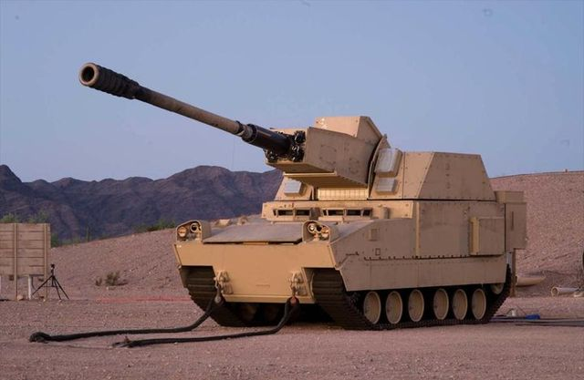

Growth · HII
Contributed to $1B+ in wins
Architected Navy live and virtual training range solutions across NCTE, NITE, and CTTR. Supported capture teams across all four services.
Explore the HII rolesDr. Shane Turner
Senior Vice President, Solutions & Artificial Intelligence at Astrion
I lead cleared teams across defense growth, mission solutions, and enterprise AI. From hands-on engineering to large-scale program delivery.
Growth · HII
Architected Navy live and virtual training range solutions across NCTE, NITE, and CTTR. Supported capture teams across all four services.
Explore the HII rolesDelivery · HII
Directed Navy training delivery across the western United States, expanding range capability and improving cost performance.
View program leadershipInnovation · Astrion
Turned a legacy scheduling tool into an automated enterprise asset recognized by government proposal evaluators.
View the Astrion workEnterprise AI · Astrion
Launched shAIne and established its value model during the first month. Built the ModelOps, evidence governance, and quality standards to support reuse across programs.
A practical foundation for AI adoption, with attributed effort and a clear method for estimating value.
Read about my current roleMy career connects engineering, program leadership, and business growth. I have worked from prototype test and classified networks through Navy range operations, major contract pursuits, and enterprise AI.
Today, I lead Astrion’s data, evidence, analytics, and AI work for Layered Defense, Autonomous Warfare, and Integrated Fires, translating operational knowledge into mission solutions and customer-facing strategy.
Follow my careerFrom hands-on systems work to enterprise leadership. Full career history, including promotions and concurrent assignments.
Layered Defense, Autonomous Warfare & Integrated Fires Division
Promoted from Vice President, Multi-Domain Test & Evaluation.
Promoted from Director, Program Management.
Concurrent assignments (2022–2024): held alongside the Live & Virtual Range Solutions SME and DESIL Lead Engineer roles below.

05 · Let’s connect
For executive and senior leadership conversations across defense growth, mission solutions, and AI.
shane@st-dba.com · resume.st-dba.com
linkedin.com/in/drshaneturner